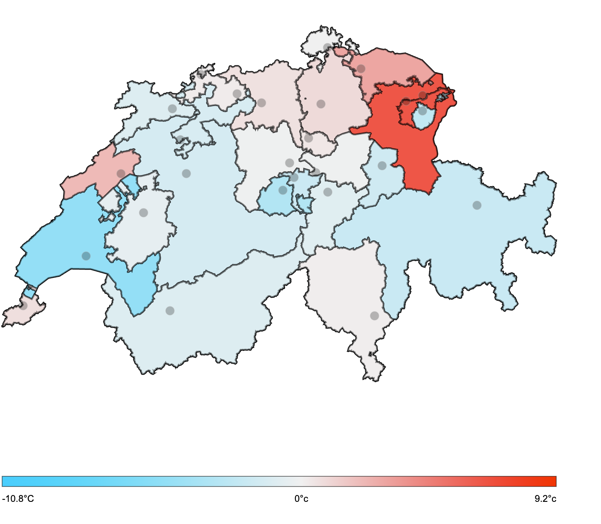
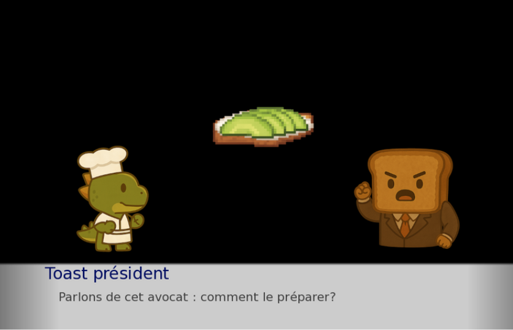
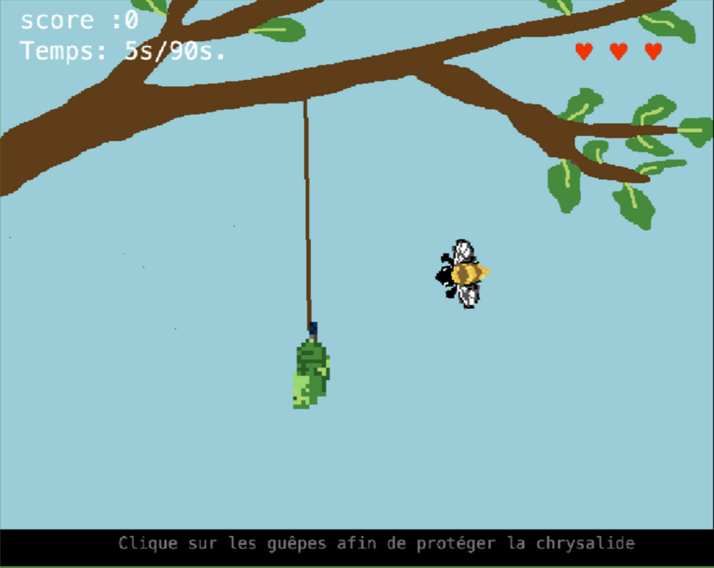

01
VISUALISATION DE DONNEES
La météo suisse en 2025
Plusieurs visualisations interactives permettant d'explorer une année de données météorologiques en Suisse.
Explorer la météo →
HUMANITES NUMERIQUES | HISTOIRE
J'explore comment les technologies numériques permettent de rechercher, visualiser, expérimenter et transmettre des savoirs.
↓ Découvrir mes projetsVISUALISATION DE DONNEES
Plusieurs visualisations interactives permettant d'explorer une année de données météorologiques en Suisse.
Explorer la météo →
FICTION INTERACTIVE
Une fiction interactive dans laquelle les choix du joueur permettent de rechercher la recette parfaite du toast à l'avocat.
Jouer au jeu →
DIGITAL HERITAGE
Numérisation d'un objet pour le musée cantonal d'archéologie et d'histoire à Lausanne par photogrammétrie et création d'un modèle 3D.
JEU VIDEO EDUCATIF
Conception et développement d'un jeu vidéo à but éducatif, dans le cadre des Mystères de l'UNIL 2026 sur le thème "la métamorphose".
Jouer au jeu →
EXPOSITION INTERACTIVE
Exposition interactive consacrée à l'histoire des médias et leur mutation en Suisse.
REALITE VIRTUELLE ET AUGMENTEE
Création d'un environnement immersif en réalité virtuelle et augmentée.
ABOUT
Étudiante en Master en histoire et humanités numériques à l'Université de Lausanne, je m'intéresse aux nouvelles manières d'étudier, de représenter et de transmettre des savoirs grâce aux outils numériques.